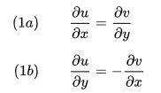
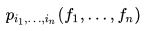
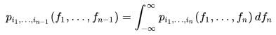
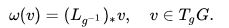
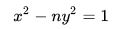
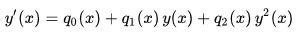

EPONYMOUS EQUATIONS
Cauchy–Riemann equations
In the field of complex analysis in mathematics, the Cauchy–Riemann equations, named after Augustin Cauchy and Bernhard Riemann, consist of a system of two partial differential equations which, together with certain continuity and differentiability criteria, form a necessary and sufficient condition for a complex function to be complex differentiable, that is, holomorphic. This system of equations first appeared in the work of Jean le Rond d'Alembert (d'Alembert 1752). Later, Leonhard Euler connected this system to the analytic functions (Euler 1797). Cauchy (1814) then used these equations to construct his theory of functions. Riemann's dissertation (Riemann 1851) on the theory of functions appeared in 1851.
The Cauchy–Riemann equations on a pair of real-valued functions of two real variables u(x,y) and v(x,y) are the two equations:

Typically u and v are taken to be the real and imaginary parts respectively of a complex-valued function of a single complex variable z = x + iy, f(x + iy) = u(x,y) + iv(x,y). Suppose that u and v are real-differentiable at a point in an open subset of ℂ, which can be considered as functions from ℝ2 to ℝ. This implies that the partial derivatives of u and v exist (although they need not be continuous) and we can approximate small variations of f linearly. Then f = u + iv is complex-differentiable at that point if and only if the partial derivatives of u and v satisfy the Cauchy–Riemann equations (1a) and (1b) at that point. The sole existence of partial derivatives satisfying the Cauchy–Riemann equations is not enough to ensure complex differentiability at that point. It is necessary that u and v be real differentiable, which is a stronger condition than the existence of the partial derivatives, but in general, weaker than continuous differentiability.
Chapman–Kolmogorov equation
In mathematics, specifically in the theory of Markovian stochastic processes in probability theory, the Chapman–Kolmogorov equation is an identity relating the joint probability distributions of different sets of coordinates on a stochastic process. The equation was derived independently by both the British mathematician Sydney Chapman and the Russian mathematician Andrey Kolmogorov.
Suppose that { fi } is an indexed collection of random variables, that is, a stochastic process. Let

be the joint probability density function of the values of the random variables f1 to fn. Then, the Chapman–Kolmogorov equation is

i.e. a straightforward marginalization over the nuisance variable.
Maurer–Cartan form
In mathematics, the Maurer–Cartan form for a Lie group G is a distinguished differential one-form on G that carries the basic infinitesimal information about the structure of G. It was much used by Élie Cartan as a basic ingredient of his method of moving frames, and bears his name together with that of Ludwig Maurer.
As a one-form, the Maurer–Cartan form is peculiar in that it takes its values in the Lie algebra associated to the Lie group G. The Lie algebra is identified with the tangent space of G at the identity, denoted TeG. The Maurer–Cartan form ω is thus a one-form defined globally on G which is a linear mapping of the tangent space TgG at each g ∈ G into TeG. It is given as the pushforward of a vector in TgG along the left-translation in the group:

Pell's equation
Pell's equation, also called the Pell–Fermat equation, is any Diophantine equation of the form

where n is a given positive nonsquare integer and integer solutions are sought for x and y. In Cartesian coordinates, the equation has the form of a hyperbola; solutions occur wherever the curve passes through a point whose x and y coordinates are both integers, such as the trivial solution with x = 1 and y = 0. Joseph Louis Lagrange proved that, as long as n is not a perfect square, Pell's equation has infinitely many distinct integer solutions. These solutions may be used to accurately approximate the square root of n by rational numbers of the form x/y.
This equation was first studied extensively in India starting with Brahmagupta, who found an integer solution to 92x
2 + 1 = y
2 in his Brāhmasphuṭasiddhānta in 628. Bhaskara II in the twelfth century and Narayana Pandit in the fourteenth century both found general solutions to Pell's equation and other quadratic indeterminate equations. Bhaskara II is generally credited with developing the chakravala method, building on the work of Jayadeva and Brahmagupta. Solutions to specific examples of Pell's equation, such as the Pell numbers arising from the equation with n = 2, had been known for much longer, since the time of Pythagoras in Greece and a similar date in India. The name of Pell's equation arose from Leonhard Euler mistakenly attributing Lord Brouncker's solution of the equation to John Pell.
Poisson's equation
Poisson's equation is an elliptic partial differential equation of broad utility in theoretical physics. For example, the solution to Poisson's equation the potential field caused by a given electric charge or mass density distribution; with the potential field known, one can then calculate electrostatic or gravitational (force) field. It is a generalization of Laplace's equation, which is also frequently seen in physics. The equation is named after French mathematician and physicist Siméon Denis Poisson.
Riccati equation
In mathematics, a Riccati equation in the narrowest sense is any first-order ordinary differential equation that is quadratic in the unknown function. In other words, it is an equation of the form

where q
0(x) ≠ 0 and q
2(x) ≠ 0. If q
0(x) = 0 the equation reduces to a Bernoulli equation, while if q
2(x) = 0 the equation becomes a first order linear ordinary differential equation.
The equation is named after Jacopo Riccati (1676–1754).
More generally, the term Riccati equation is used to refer to matrix equations with an analogous quadratic term, which occur in both continuous-time and discrete-time linear-quadratic-Gaussian control. The steady-state (non-dynamic) version of these is referred to as the algebraic Riccati equation.
Sine-Gordon equation
The sine-Gordon equation is a nonlinear hyperbolic partial differential equation in 1 + 1 dimensions involving the d'Alembert operator and the sine of the unknown function. It was originally introduced by Edmond Bour (1862) in the course of study of surfaces of constant negative curvature as the Gauss–Codazzi equation for surfaces of curvature −1 in 3-space, and rediscovered by Frenkel and Kontorova (1939) in their study of crystal dislocations known as the Frenkel–Kontorova model. This equation attracted a lot of attention in the 1970s due to the presence of soliton solutions.
reference: www.wikipedia.com